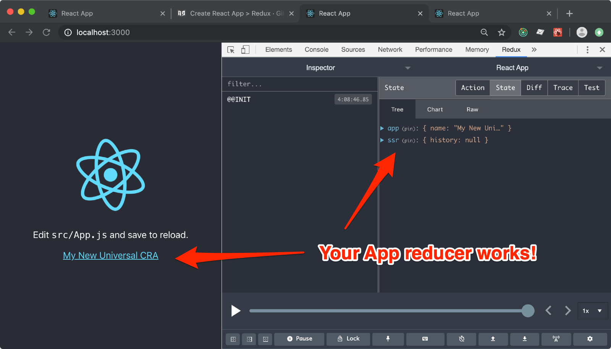
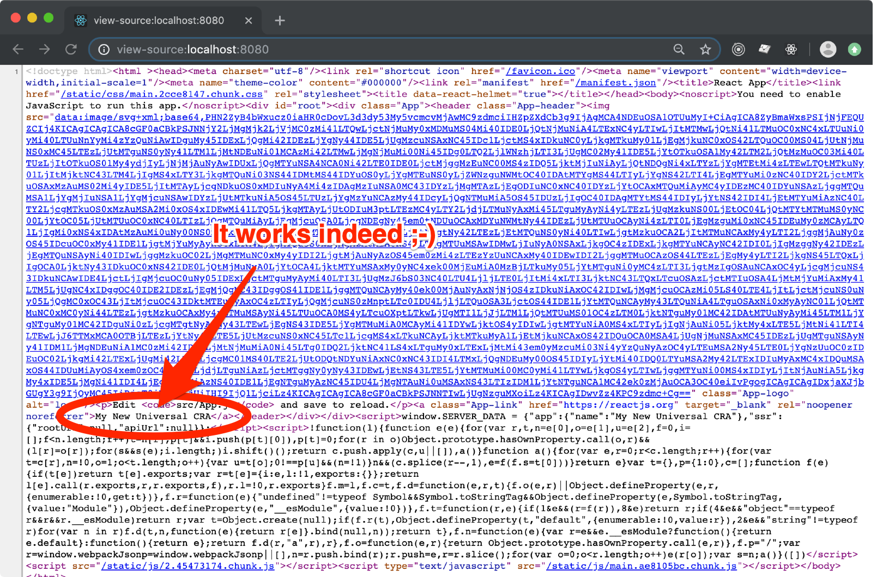

Create React App > Redux
In this step-by-step tutorial you are going to add Redux to the Universal CRA that you have set up in the previous chapter. You can download the codebase here.
Step n.1 - Create a Redux Store
Setting up a Redux store is often referred to as an overhelming task.
We think we managed to simplify this process a lot in ForrestJS by exposing a utility method that injest your reducers and returns a store that is fully featured with stuff like redux-thunk and Redux DevTools.
In this first tutorial you are going to use the createSSRState() in the easiest
of the possible way:
JUST ADD REDUCERS TO IT.
This suits 90% of the apps that I write.
But keep in mind that this is a highly extensible tool and you can configure it with new middlewares, decorators and basically any kind of extension that you may need.
Create src/redux-store.js:
vi src/redux-store.js
and paste this code into it:
import createSSRState from '@forrestjs/core/lib/create-ssr-state'
const app = () => ({
name: 'My New Universal CRA',
})
export default createSSRState({ app })
It is worth noticing that createSSRState() is a function that returns a NEW store
configured to suit your needs. Every time you call it it will generate a brand new store.
This behaviour is crucial to Server-Side Rendering as you really need to protect the execution context of you app in Node.
ForrestJS takes care of this for you. Just remember that any piece of information that you put in the Redux store is scoped to each server request by design, making it the safest place where to actually store data.
Step n.2 - Provide your Client entry point
Now is time to provide our App's entry point with the Redux store, so that
you can use the connect() method to withdraw informations from it.
Open src/index.js:
vi src/index.js
then find the line:
ReactDOM.render(<App />, document.getElementById('root'));
and replace with:
import { Provider } from 'react-redux';
import createState from './redux-store';
const Root = ({ store, ...props }) => (
<Provider store={store}>
<App {...props} />
</Provider>
);
createState()
.then(props => ReactDOM.render(<Root {...props} />, document.getElementById('root')))
.catch(err => console.error(err));
It is worth noticing that the createState() function is asynchronous. I don't
really want to go deep into details in this tutorial, but just keep in mind that your
Application's state is capable of doing asynchronous booting operations :-)
Step n.3 - Provide your Universal entry point
We need to modify the Server-Side entry point in a very similar way. No big deal.
Open src/index.ssr.js:
vi src/index.ssr.js
find the line:
export const staticRender = createSSRRender(App)
and replace with:
import React from 'react'
import { Provider } from 'react-redux'
import createState from './redux-store'
const Root = ({ store, ...props }) => (
<Provider store={store}>
<App {...props} />
</Provider>
);
export const staticRender = createSSRRender(Root, { createState })
Why do you duplicate the
Rootcomponent's code?
I'm glad you asked!
In one of the tutorials ahead you are going to add react-router to your app.
At that point the Root component that runs in the server-side rendering will need
a special version of the router provider called StaticRouter, while the
client-side version need the normal Router and a history component that
is capable of using the
browser's history API.
In this tutorial we are laying down the fundations for that implementation.
Step n.4 - Use the App's reducer info
It's now time to use the Redux store we built and render the App's name into the UI.
You are going to make a few changes to src/App.js, but if
you are already familiar with Redux, you have probably already done it :-)
vi src/App..js
find:
function App() {
and replace with:
import { connect } from 'react-redux';
const mapState = ({ app }) => ({
name: app.name,
});
function App({ name }) {
then find:
Learn React
and replace it with:
{name}
finally find:
export default App;
and replace it with:
export default connect(mapState)(App);
Test it out!
Now it's time to run:
yarn start
And enjoy your Redux's state manager working, and the Redux DevTools magically set up for you.

And you should also test it Server Side Rendered:
yarn serve

Download
If you experienced any trouble following the steps above, download this tutorial codebase here.
The Next Step
ForrestJS's Redux setup ships with an intersting feature which is called... react-redux-feature.
It basically provides a simple indication how to organize your application into smaller pieces - the features - and how to let them talk together in a nice and predictable way.
👉 CLICK HERE if you can't resist and are so curious about it :-)